環境構築 (2026.09.01 更新)
このページは、Mac用の環境構築手順です。
Windowsの方はこちらのページに遷移してください。
以下の手順を参考に、各自で環境を構築してください。第1回 (10/7(水))の講義では、すでに環境が構築されていることを前提として講義を進めます。
プログラミングの講義を受講するために、はじめに各自のコンピュータにC言語の開発環境を構築する必要があります。
環境構築には、コンパイラとエディタが必要です。以下の表を参考に、自分のOSに合わせたコンパイラとエディタをインストールしてください。
| OS | コンパイラ | エディタ |
|---|---|---|
| Windows | MinGW | Visual Studio Code |
| Mac | Clang/LLVM | Visual Studio Code |
この二つを組み合わせると、機能性ばっちり、見た目もスマートなプログラマの環境になります。
ですが、環境構築は少し大変です。今から下をよく読んで、環境を構築してください。
目次
- 準備知識
- Command Line Tools for Xcode とは？
- コンパイラインストール
- Visual Studio Code のインストール
- Visual Studio Code の日本語化
- AI・Suggestion機能の無効化
- 動作確認
準備知識
Command Line Tools for Xcode とは？
Command Line Tools for Xcode は、Appleが提供する開発用ツールのセットです。
Xcodeはフリーで使えるアプリケーションです。インストール⽅法の概要を以下に⽰します。インストールについては参考となる情報がインターネットに多くありますので、以下の資料で分からない点がありましたら、まずはインターネットで調べてみてください。
これから、次の5つの手順を順番に進めます。
① コンパイラ（Clang/LLVM）の確認・インストール
② Visual Studio Codeのインストール
③ Visual Studio Codeの日本語化 (任意)
④ AI・Suggestion機能の無効化
⑤ 動作確認
①～⑤まですべて完了すれば、環境構築は終了です。
コンパイラインストール
Clang
Mac は、Clang/LLVMコンパイラとよばれるものを利用します。
多くの場合、このコンパイラはすでにインストールされています。
確認のため、Finderからアプリケーション -> ユーティリティ -> ターミナル の順で、ターミナルをまず開いてください。
ターミナル画面で、以下のコマンドを実行します。
clang --versionバージョン情報が表示されればインストールされています。次の作業に移ってください。
インストールされていない場合は、ターミナルで以下のコマンドを実行してください。
xcode-select --installコマンドを実行した後に表示される案内に従って操作を進めるとCommand Line Tools for Xcode がインストールされ、clangが使えるようになります。
ターミナル画面で、以下のコマンドを実行します。
clang --versionVisual Studio Code のインストール
コードを書くためのエディタには Visual Studio Code を使用します。
以下の公式サイトからインストールしてください。
画面通りに進めていけば問題なくインストールできると思いますが、もしやり方がわからない場合は、「VSCode インストール」などとweb検索して、インストール手順を紹介しているサイトを参照してください。
Visual Studio Code の日本語化
VSCodeは英語で全て書かれています。これは、皆さんには少し使いづらいと思います。
VSCodeは、たくさんの言語に対応していて、日本語化する設定方法を書いておきます。必須ではないですが、やっておいた方が皆さん的に楽だと思います。
※以下の画像はWindows版VSCodeの画面ですが、Mac版でも同様に日本語化できます。
1. VSCodeを起動
2. 左側のアイコンメニューから、Extensionsを選択
3. 検索ボックスにて、「japanese」と打ち込む
4. 「Japanese Language Pack for Visual Studio Code」を選択し、「Install」ボタンをクリック
5. 一度VSCodeを閉じ、再度起動させたら反映されている
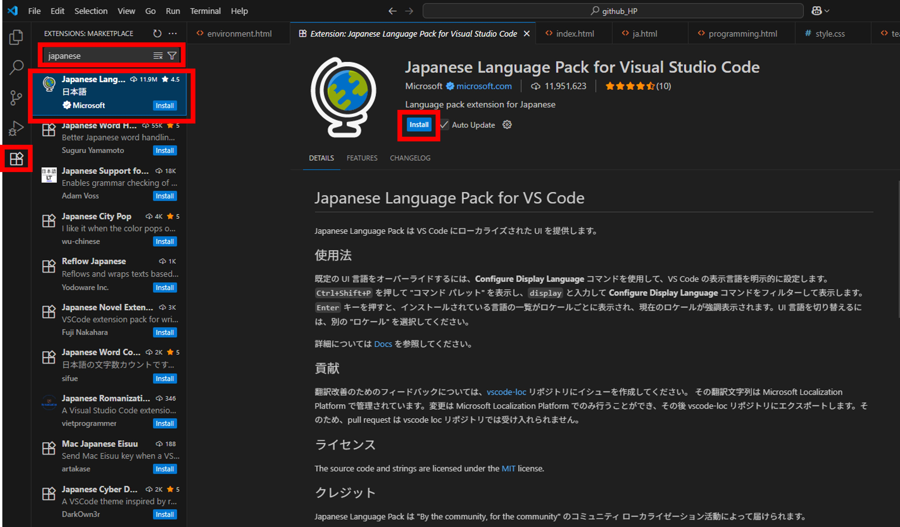
図1. VS Codeの日本語化
Visual Studio Code のAI・Suggestion機能の無効化
VSCodeには、AIによるコード補完や、入力中にプログラムの候補を表示するSuggestion機能があります。
本講義では、プログラムを自分で考えて入力する練習をするため、これらの補助機能をオフにしておきます。以下の手順に従って設定してください。
※以下の画像は英語表示のVSCodeで撮影しています。日本語化を行った場合は、画像内の英語表記に対応する日本語の項目を選択してください。
AI機能をオフにする
1. VSCodeの画面左下にある歯車マークをクリックし、「設定」を選択します。
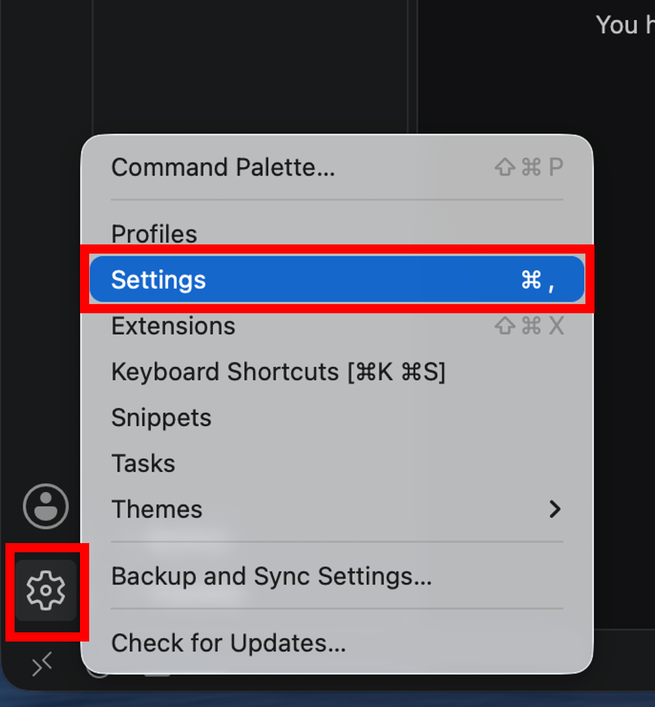
図2. VS Codeの設定画面を開く
2. 設定画面上部の検索ボックスに「disable ai」と入力します。「Chat: Disable AI Features」が表示されたら、左側のチェックボックスをクリックして、チェックを入れてください。
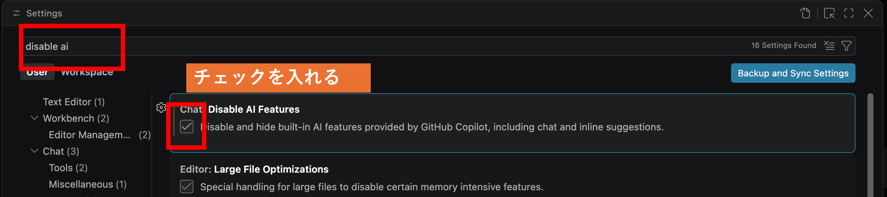
図3. AI機能の無効化
Suggestion機能をオフにする
3. 続いて、設定画面上部の検索ボックスに「quick suggestion」と入力します。「Editor: Quick Suggestions」が表示されたら、「settings.json で編集」をクリックします。
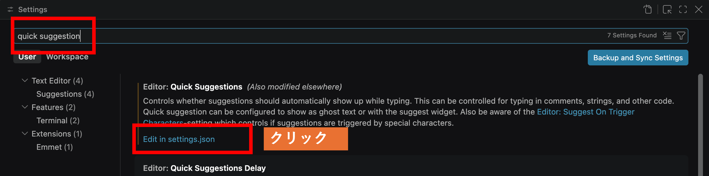
図4. Quick Suggestionsの設定
4. settings.jsonが開いたら、「editor.quickSuggestions」の中にある「other」、「comments」、「strings」の3項目を、すべて「off」に変更します。 (すでに"off"になっているものはそのままで大丈夫です。)
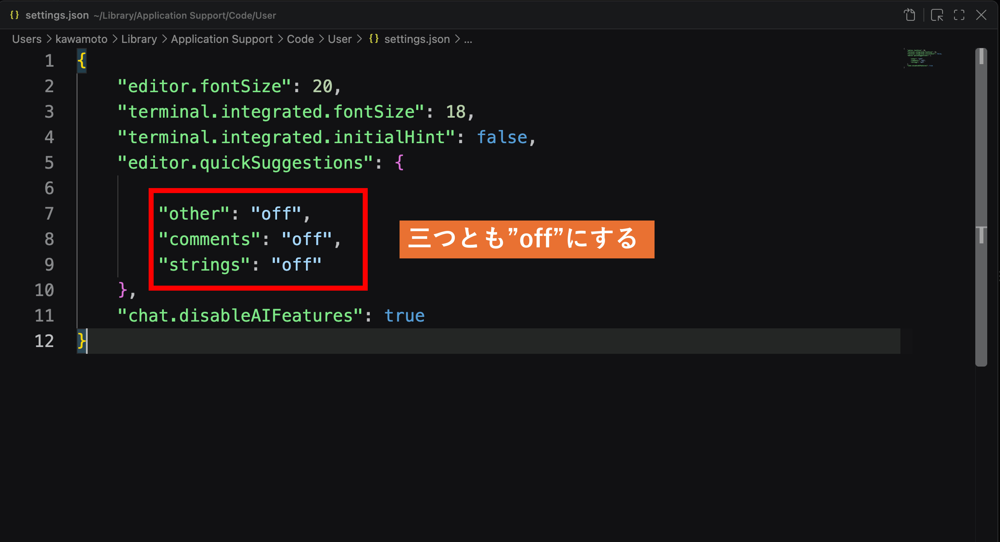
図5. Quick Suggestionsをすべてoffに設定
5. 設定が終わったらsettings.jsonを閉じます。保存するか確認する画面が表示された場合は、「保存」をクリックしてください。
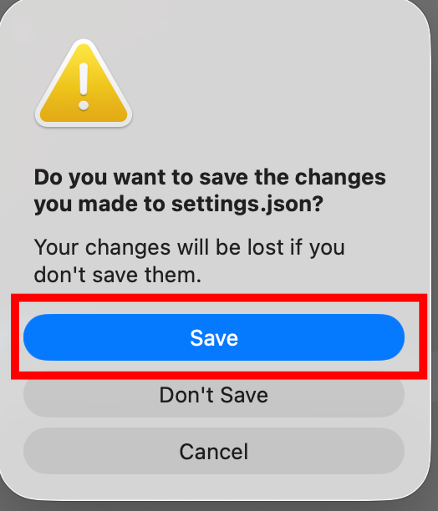
図6. settings.jsonの変更を保存
以上で、AIによるコード補完と、入力中に自動的に表示されるSuggestion機能の設定は完了です。
最後に、正しくコードが実行できないといけないので、動作確認をしましょう。
動作確認
エディタとコンパイラが準備できたら、最初の C プログラムを書いてみましょう。
とはいっても初めてなので、いろいろ設定する必要があります。下を読みながら、進めていきましょう。
作業フォルダの作成
皆さんは、大学の授業のレポート課題のwordやpowerpointをどのように管理していますか？
全部ダウンロードファイルに入れたり、デスクトップに置きっぱなしにしてるズボラな人も中にはいると思います。
プログラムで作成されるコードファイルはとても大量で、かつ頻繁に書き換えたり消去が行われます。なので、プログラミングの授業で作成したファイルを雑に管理すると、間違えてファイルを消してしまったり、 見つからなくなってしまったりして、あとで大変なことになります。
なので、今からまずはプログラミング用の作業フォルダを作成しましょう。
「書類 (Documents)」フォルダに作業用フォルダを作成しましょう。Finderから書類(Documents)を開きます。
「書類 (Documents)」フォルダ上で右クリック (トラックパッドでは2本指でクリック)し、「新規フォルダ」を選択します。
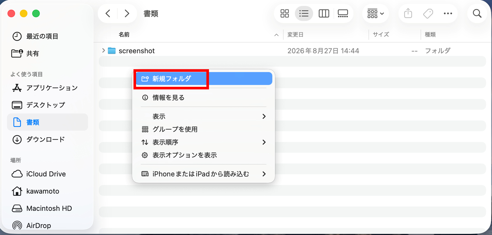
図7. 作業フォルダの作成
作成したフォルダの名前を「cpro」としましょう。
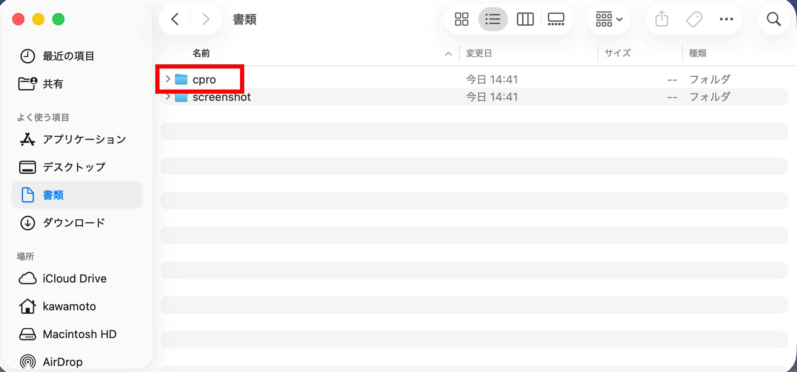
図8. cproフォルダの作成
プログラミングの講義で作成するソースファイル (コードのファイル)は、すべてここに保存するように常に心がけましょう。
動作確認
以下の手順で、まずは.cファイルを作成します。
※以下の画像は英語表示のVSCodeで撮影しています。日本語化を行った場合は、画像内の英語表記に対応する日本語の項目を選択してください。
1. Visual Studio Codeを起動
2. 上部メニューバーからFile -> Open Folder...を選択
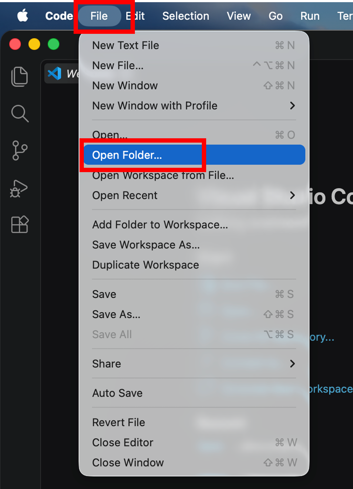
図9. VS Codeでフォルダを開く
3. 画面が開くので、「書類」フォルダ内に作成した「cpro」フォルダを選択し、「開く」をクリック
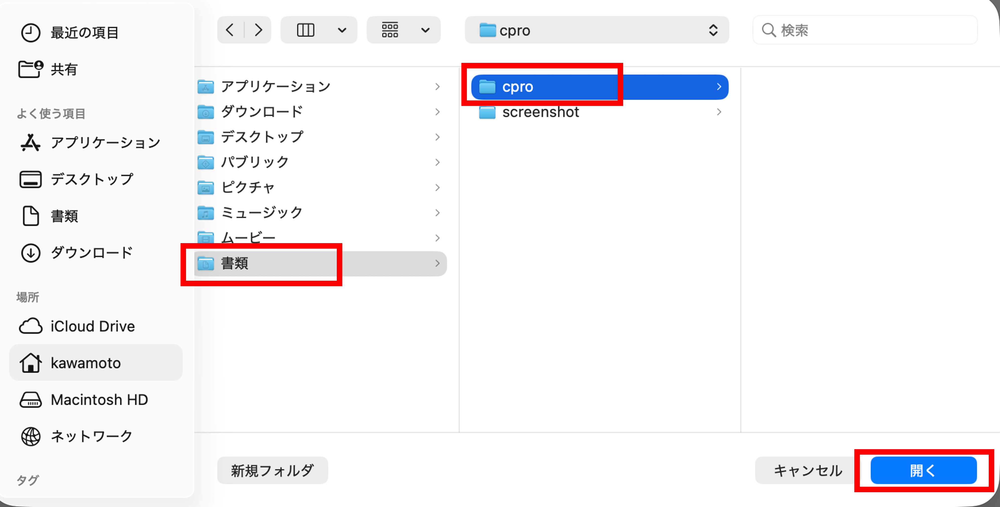
図10. cproフォルダの選択
4. 画面が移り変わって、「このフォルダ内のファイルの作成者を信頼しますか？」という画面が出てきたら、「はい、作成者を信頼します」を選択 (出てこなかったらそのまま次へ)
5. 左側の「エクスプローラー」で「cpro」を右クリック (トラックパッドでは2本指でクリック)し、「New File...」を選択
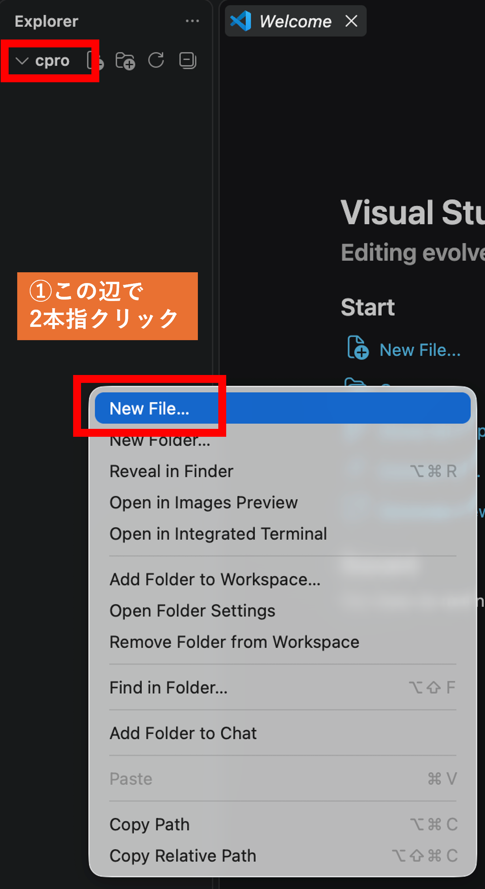
図11. 新しいファイルの作成
6. 「test.c」という名前でファイルを作成
test.cのファイルを作成したら，以下のプログラムを入力
#include <stdio.h>
int main(void){
printf("Hello, World!\n");
return 0;
}
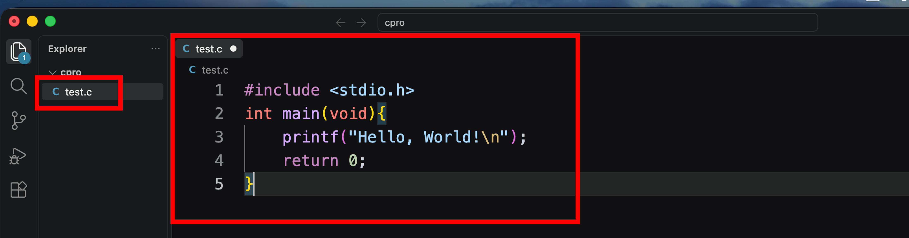
図12. test.cへのプログラム入力
プログラムの入力が終わったら、上部メニューバーからファイル -> 保存を選択し、保存してください。これをしないとプログラムが動きません。
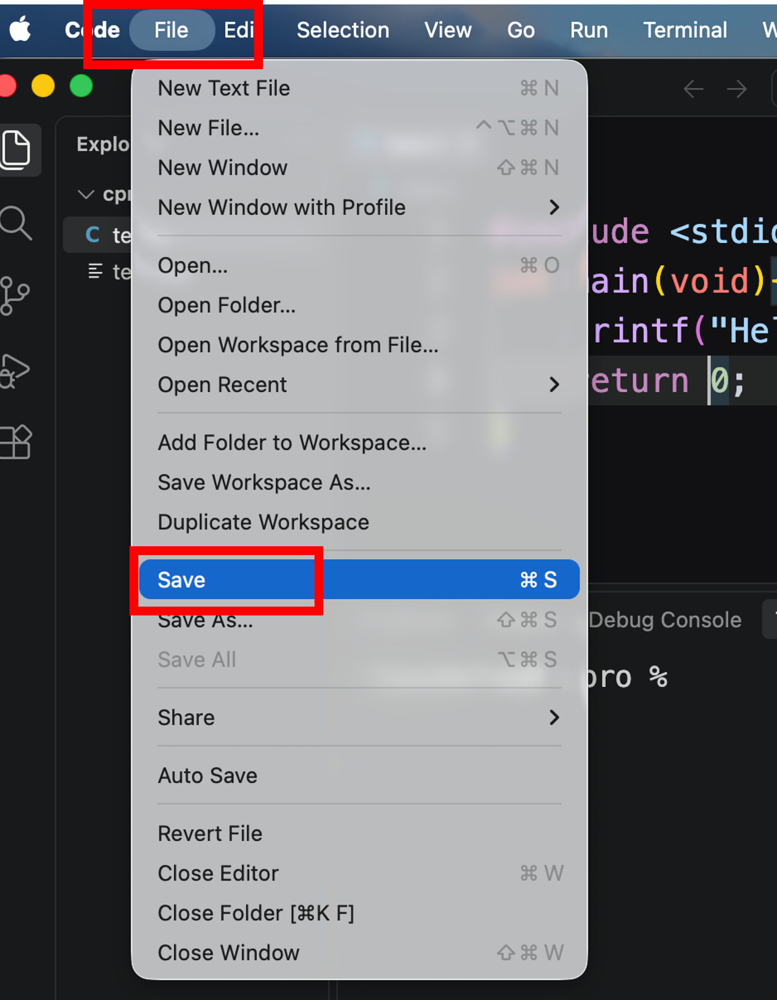
図13. test.cの保存
コンパイル
VS Codeのターミナルを使って、作成したプログラムをコンパイルします。ここからは、画面下の方にあるターミナルの画面に入力していきます。 もしもターミナルが表示されていない人は、上部メニューバーからターミナル -> 新しいターミナルを選択すると、VS Codeのターミナルが開きます。
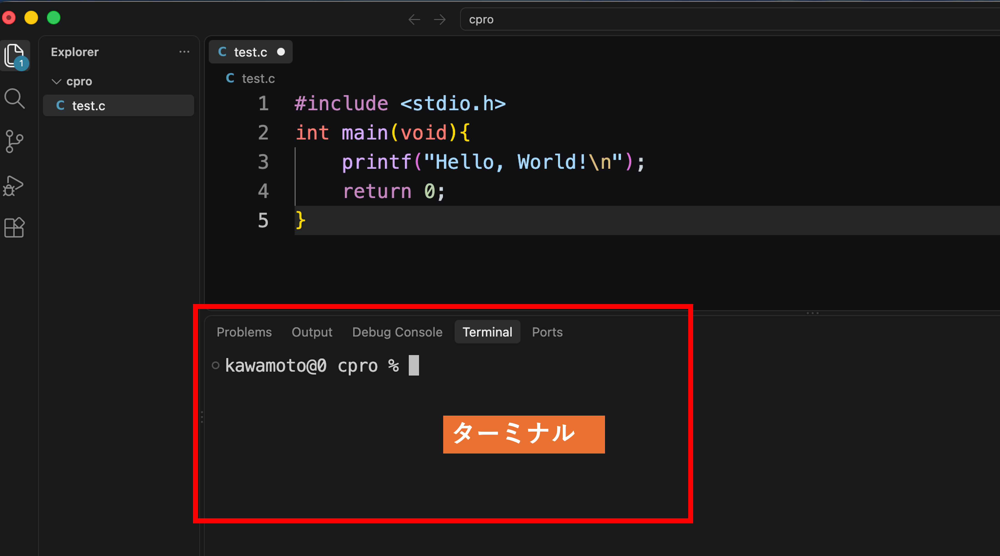
図14. VS Codeのターミナル
ターミナルが開いたら、以下のコマンドを入力してください。
gcc test.c -o test.exe -lm -ansi -pedantic -Wallプログラムの実行
コンパイルが成功すると、作業フォルダにtest.exeという実行ファイルが作成されます。ターミナルで以下のコマンドを入力して、プログラムを実行してください。
以下のコマンドを入力してください。
./test.exeターミナルにHello, World!と表示されれば、プログラムが正常に実行されています。
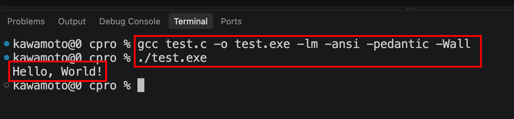
図15. コンパイルとプログラムの実行結果
環境構築のセットアップは以上となります。お疲れさまでした。